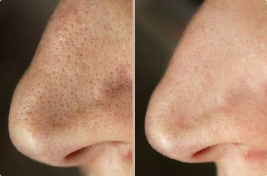
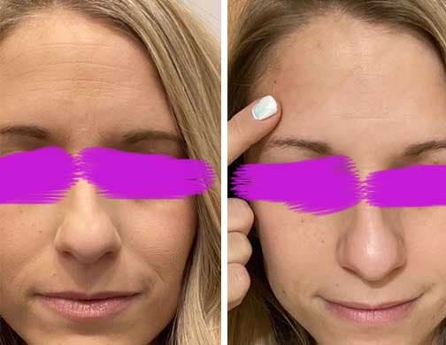
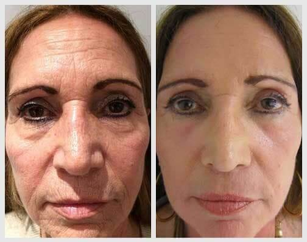

Лифтинг лишним не бывает, как в 25 лет, так и в 60! Рекомендую эту универсальную сыворотку для лица. Для такого бюджетного средства - эффект просто ВАУ!
Девочки, привет! Знаю, что многие с нетерпением ждали обзор Wrinkless Serum. Получайте!
Итак, начнем.
УПАКОВКА: флакон с пипеткой + бумажная коробка. Скромно. Многих это смущает и даже отпугивает от покупки, но не меня.
Я не сужу начинку по обертке и вам не советую. Чем больше у упаковки выкрутасов, тем она дороже, соответственно, тем дешевле сырье самого продукта.
СОСТАВ: потрясающий. Витамин Е, масло лесного ореха, сливовое масло, масло макадамии, масло жожоба, масло косточек абрикоса, масло семян красной малины.
К составу вопросов нет. Как видим, продукт на 100% органический.
ЧТО ВНУТРИ ФЛАКОНА?
Сыворотка приятного запаха, без резкой отдушки.
Консистенция не водянистая, на коже не расплывается. Это облегчает нанесение и делает расход экономичным.
ПРОИЗВОДИТЕЛЬ WRINKLESS SERUM ОБЕЩАЕТ: эффект фотошопа/бэби фейс/гладкая кожа и равномерный тон лица
- разглаживание морщин
- осветление пигментных пятен
- эффект подтяжки/улучшение тонуса кожи лица и четкий контур овала
- увлажнение
- стимуляция выработки естественного коллагена
- регенерация клеток/ усиливает их защитную функцию и продлевает жизнь.
Информация с официального сайта.
ЗВУЧИТ НЕПЛОХО, А ЧТО НА САМОМ ДЕЛЕ?
Мне 33. В силу возраста, кожа уже не идеальна. Тусклый цвет, неровный тон, кое-где видна пигментация. Мимические морщину на лбу, около глаз и уголков губ. Явно выражены носогубные и межбровные заломы. Короче говоря, без коррекции фильтрами не обойтись :(
ПЕРВЫЙ ЗАТЕСТ
Сыворотка впитывается мгновенно, не липнет и не оставляет эффекта пленки на лице (у меня комби кожа: Т-зона обычно жирнит, а на щеках сухая и часто шелушится).
Для лица и шеи достаточно две-три капли. Флакона хватит надолго.
Я нанесла Wrinkless вечером, а утром глядя в отражение зеркала не могла поверить, что эта красотка — я. Никаких темных кругов и мешков под глазами.
Обычно по утрам я тратила 30 минут на то, чтобы довести лицо до состояния “не стыдно выйти в люди”. Это 100 лимфодренажных прыжков, массаж лица скребком гуаша и кубиком льда, затем макияж. Закончив все эти манипуляции, я запрыгивала в одежду и выбегала в офис
А тут проснулась и уже красотка! Появилось время собраться не спеша и позавтракать.
1 НЕДЕЛЯ ИСПОЛЬЗОВАНИЯ
Кардинально изменился цвет лица. Исчез болезненный вид и серо-желтый оттенок. Вместо этого выгляжу свежо, кожа приятного, здорового оттенка, с румянцем, как у девушки-подростка.
Верю, что будет еще лучше.
2 НЕДЕЛЯ ИСПОЛЬЗОВАНИЯ
Я использовала сыворотку Wrinkless два раза в день: утром и вечером.
Поразил стойкий эффект сыворотки в течение дня. Никакой сухости и стянутости. Жирного блеска тоже не было, даже в Т-зоне.
Появилось сияние, о котором часто говорят в рекламе. Особенно видно было при дневном освещении. Кожа будто отражает солнечный свет.
К концу второй недели флакон выглядел почти нетронутым. Это доказало экономичный расход сыворотки.
3 НЕДЕЛЯ ИСПОЛЬЗОВАНИЯ
Рассматривая свое отражение в зеркале, я заметила, что мимика перестала оставлять след в виде морщин на лице. Улыбаюсь или хмурюсь — ни единого намека на ненавистные полосочки.
Кожа будто благодарила за Wrinkless — она мягкая на ощупь, но в то же время упругая, к ней было приятно прикасаться. Заметно посветлели пигментные пятна на лбу и щеках. Наверное, это обрадовало меня больше всего. Так как раньше мне приходилось смешивать несколько оттенков корректоров и тональных основ, чтобы замаскировать свою “леопардовую” кожу.
Wrinkless не только делает кожу совершенной, но и экономит кучу времени на сборы и обратку фото. Теперь мне не стыдно загрузить свое фото в соцсеть без фотошопа и фильтров! И я горжусь этим.

4 НЕДЕЛЯ ИСПОЛЬЗОВАНИЯ
Сыворотка Wrinkless не подвела! Это восторг!
Если раньше мое лицо можно было сравнить с мятой скатертью в заломах, то сейчас кожа - как персик!
Еще недавно мои носогубные складки были глубокими, как Гранд - Каньон. За месяц они стали едва заметны.
Кожа гладкая и шелковистая. Лицо будто нитями натянули, овал стал более четким и выраженным: скулы, углы молодости. А пигментные пятна сравнялись с тоном кожи.
Кожа просто идеальная,здоровая, сияющая! Даже без макияжа выгляжу отдохнувшей, будто только с курорта.
Сравнивая финальные фото с первыми, трудно поверить, что прошло всего 4 недели. Если бы это не произошло лично со мной я бы предположила, что прошел минимум год и десятки косметологических процедур, либо час работы в фотошопе.
ИТОГИ
Мой вердикт: Wrinkless будто отличник, выполняет свои функции на 5+.
Богатейший состав за такие деньги и эффект салонного ухода налицо. За небольшую сумму вы получаете средство с ВАУ эффектом.
Как только эта сыворотка закончится, однозначно куплю еще. Теперь это мое любимое средство!
К покупке рекомендую! (НАСТОЯТЕЛЬНО).
Ну и по традиции, пишите комментарии и делитесь моим отзывом со своими подругами. По себе знаю, как морщины омрачают жизнь. Держать сыворотку в секрете не имею права. Для тех кому срочно нужно преобразиться я прикрепляю ссылку на официальный сайт, где вы можете заказать Wrinkless без наценки косметологов и аптек:
 Реально ли выглядеть в 55 на 45?
Реально ли выглядеть в 55 на 45?
Maria
3 дня назад
НАКОНЕЦ-ТО. Я ждала месяца два, уже точно, чтобы кто-то отзыв написал. Заказываю!
Иннесссска
3 дня назад
Согласна. Прям ВАУ! Лицо будто после каких-то крутых процедур.
Olya Ponarovskaya
2 дня назад
Девочки, здравствуйте. Из всего огромного количества уходовой косметики сыворотка Wrinkless реально хоть как-то привела мое лицо в порядок. Не думала, что без ботокса и других инъекций смогу от морщин избавиться. От одного вида иглы теряю сознание. Утром наносила на лицо тонким (обычным) слоем, а на ночь плотным, как маску. Результатом очень довольна. Кожа стала бархатистая и приятная на ощупь, упругая. Даже пигментные пятна скрылись. Пользуюсь около года и уже заканчиваю третью баночку. В 55 лет выглядеть на 45 — по моему нет ничего лучше. Вот мое фото:
Nikitina_Diana
вчера, 15:49
Автор, присоединяюсь к рекомендациям про Wrinkless. Очень хорошее средство. Не скажу что прям сразу, но эффект появился когда начала по 3-4 раза в день использовать. Но это и не странно, раньше на себя ни денег ни времени не было. Тут пишут что в 55 выглядят на 45, а у меня было наоборот. Все от нелегкой жизни. Надеюсь с таким помощником еще получится преобразиться. Сыворотка напитала кожу и морщины будто вытолкали изнутри. Если так пойдет и дальше, то через пару месяцев даст Бог новая жизнь не за горами. Очень хочется встретить хорошего мужчину и быть счастливой.
arianna
вчера, 18:07
Это находка года! Ни одна биоревитализация и мезотерапия не давала такого эффекта как сыворотка Wrinkless. Использую 2 раза в день. Я теперь вряд ли эту баночку на что - то променяю.
London_living
сегодня, 9:44
Когда доходит до эффекта, который ты видишь своими глазами. как меняется твое лицо все сомнения уходят прочь! Я тоже не особо верила в эффект, но заказала Wrinkless после прочтения этой статьи. Что еще оставалось делать? Мне 40 а я все еще не замужем, мужчины смотрели будто сквозь меня. Лицо было покрыто морщинами. А спустя три месяца их совсем нет! Так что дамы, не вздумайте ставить на себе крест! Даже у таких как я все получилось!
вставить видео.Nasty_nesty
сегодня, 12:58
Мне муж подарил эт сыворотку на годовщину. Я сначала расстроилась — думала фигня какая-то. Фирма то совсем неизвестная. Я обычно babor или biologic пользуюсь. Но средство на удивление прям порадовало. Эффект не хуже, чем от люкса. Кожа сияет
Michele
сегодня, 13:27
Хороший крем, давно им пользуюсь. Очень нравится, что там все натуральное.